Screenshots
  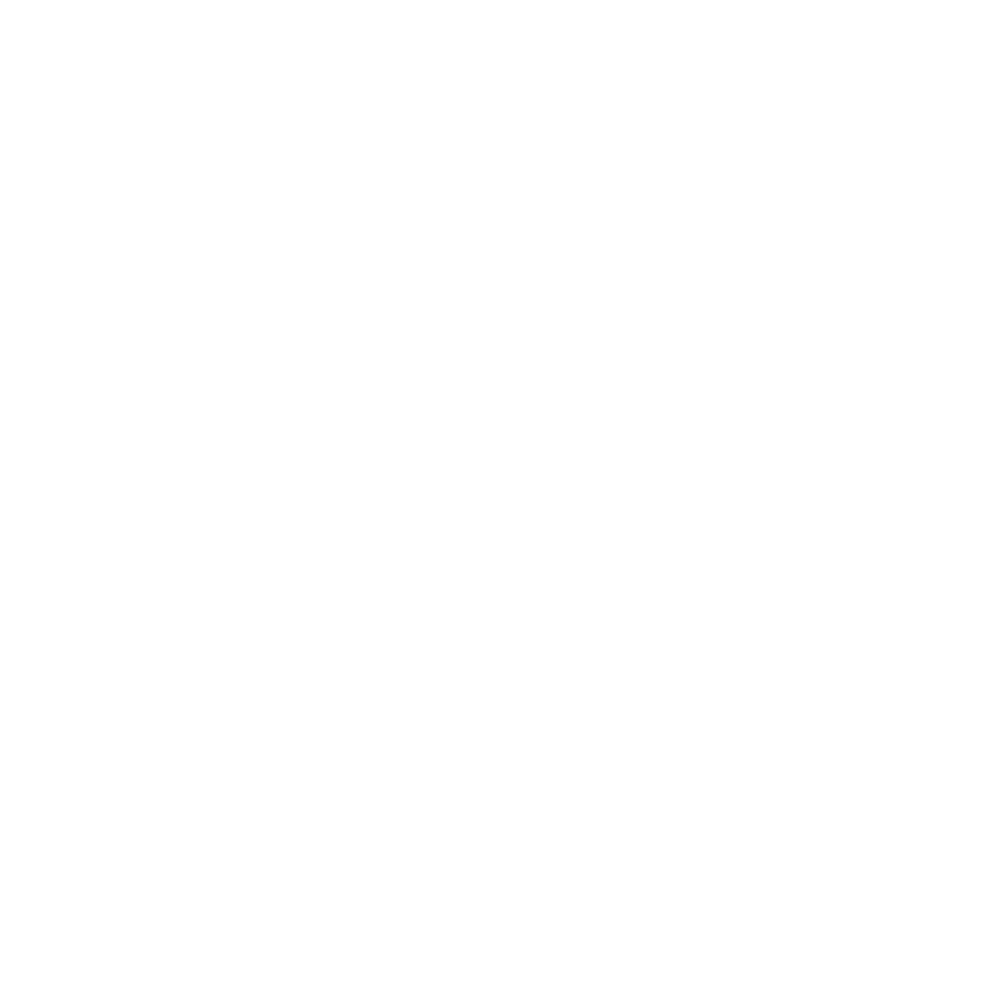       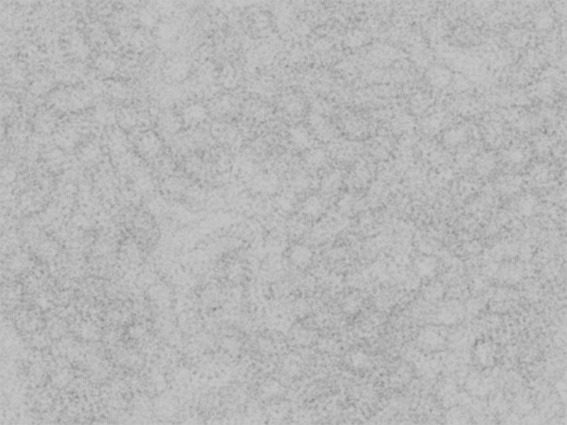 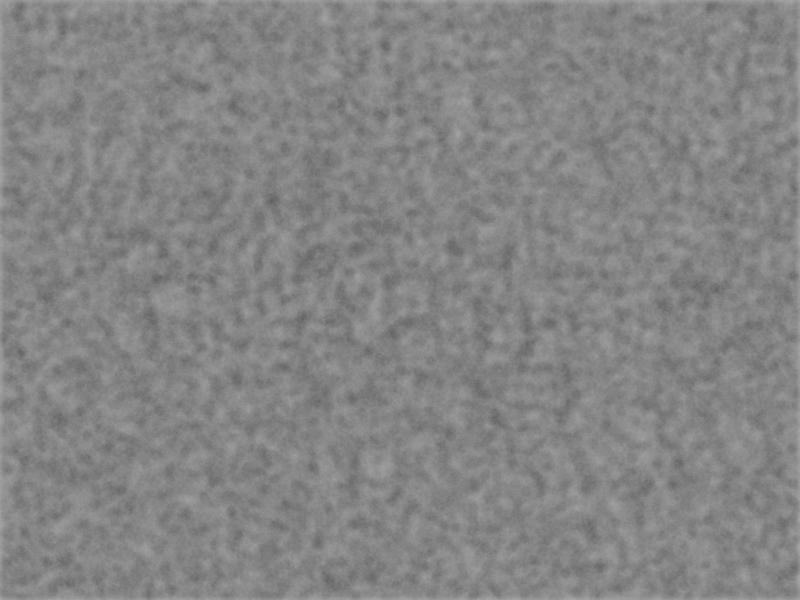 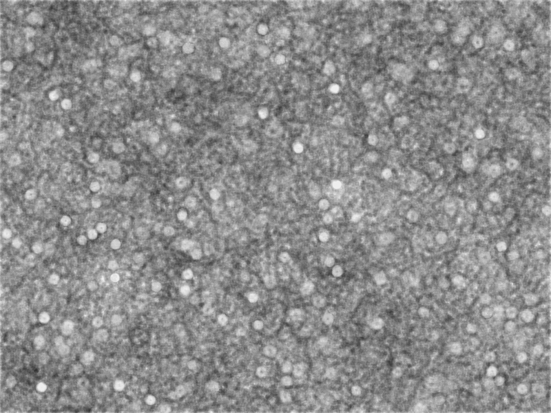 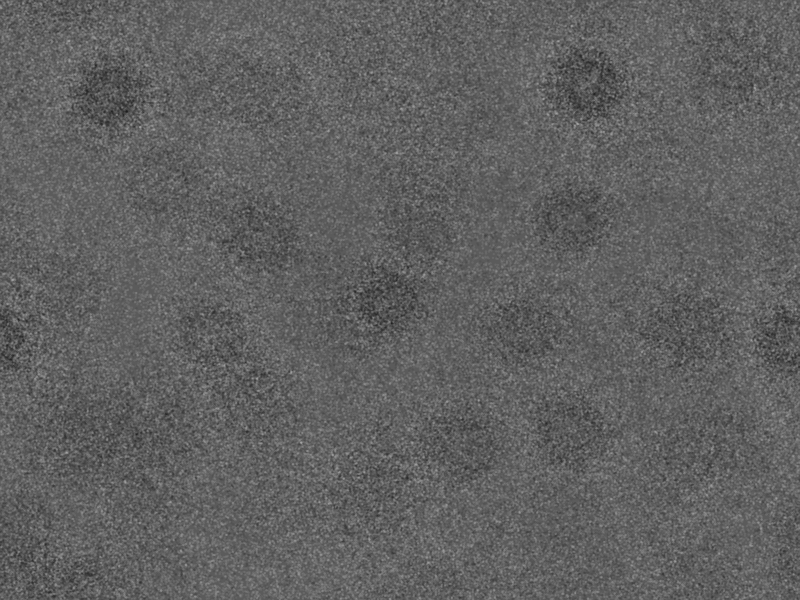 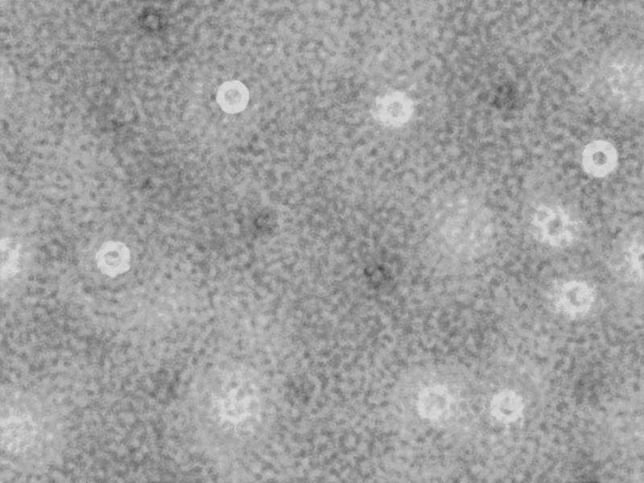 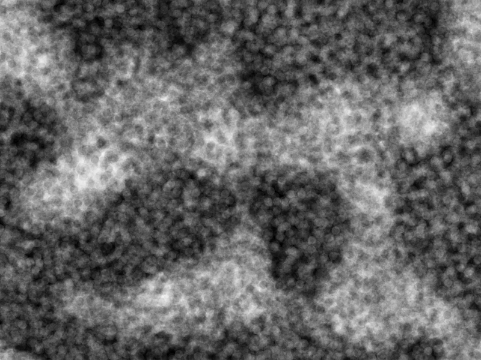Early experiments
The first set of experiments. Defining basic lines and giving them movement.
Looking at different ways to represent entities and the emergence of entities out of nothing.
Shapes and movement
A second pass over the forms and movement.
Emergence
Swarm behaviour.